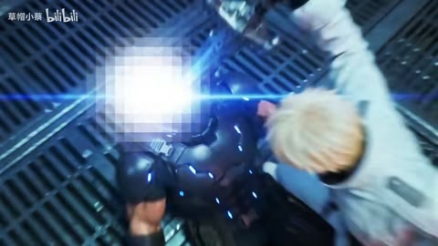

← 案例图谱H28 / 主要视觉研究样本
嗦嗦 嗦嗦嗦嗦嗦
土埋了半截的人 · 4.2万播放快照 · <10万 · B站原作 ↗
眼部内嵌人物、面部红网格和词语错峰定位有图文设计，火墙本身是素材归属待分。
 约20.000秒 · 案例代表帧
约20.000秒 · 案例代表帧从画面里找依据
这一例先看什么
眼部内嵌人物、面部红网格和词语错峰定位有图文设计，火墙本身是素材归属待分。
审美判断
白色书法大字、红色关键词与蓝暗背景/橙火形成对比，布局有中心、边缘和竖排的变化。
迁移到自己的题材
战斗、运动、竞速、预告、产品性能演示、情绪冲突的高潮。
教学提问：观众能指出谁在攻击、朝哪边、是否击中吗？哪些是原素材的动作，哪些才是新增剪接或合成？
带画面的分析单元
图像标出取样时间，对应观察中的关键状态。单帧不能独立证明运动，连续性请结合摘录。表达作用与应用场景是教学解读，复现路线是建议，不是原作者工程还原。
分析单元 01 / 0—0秒
窄长数字大字／中心排版
实际观察
画面中央的大号1838窄长数字，与暗蓝背景形成对比。只确认单帧形态。
表达作用（教学解读）
把阅读顺序变成观看顺序；用字重、位置与停留表达强调、犹豫或压迫。
具体应用场景
观点短片、歌词视觉、人物宣言、章节、情绪高潮；先决定哪些词必须读懂，哪些只是纹理。
复现建议（非原作者工程还原）
压缩字宽或选窄体，中心定位、填充色和轻微透明度。
直出判断：容易
常见误用：每个字都弹跳、整句停留不足、所有文字同时争主位。严肃叙事里无理由的回弹会削弱重量。
分析单元 02 / 20—20秒
眼部内嵌人物／环绕大字
实际观察
大眼睛占满画幅，人物置于瞳孔区域，四周分布白色书法字。属于合成画面，是否由原动画已有须进一步对源。
表达作用（教学解读）
把阅读顺序变成观看顺序；用字重、位置与停留表达强调、犹豫或压迫。
具体应用场景
观点短片、歌词视觉、人物宣言、章节、情绪高潮；先决定哪些词必须读懂，哪些只是纹理。
复现建议（非原作者工程还原）
眼形/圆形遮罩、人物图层、多处文字定位。
直出判断：已有素材后容易
常见误用：每个字都弹跳、整句停留不足、所有文字同时争主位。严肃叙事里无理由的回弹会削弱重量。
分析单元 03 / 33.3—35.3秒
中心书法字幕／火焰前景／金色流线
实际观察
33.367秒进入人物近景，火星、金色线条从前方流过；35.033秒转为火焰与下一人物构图。
表达作用（教学解读）
把阅读顺序变成观看顺序；用字重、位置与停留表达强调、犹豫或压迫。
具体应用场景
观点短片、歌词视觉、人物宣言、章节、情绪高潮；先决定哪些词必须读懂，哪些只是纹理。
复现建议（非原作者工程还原）
书法字层和素材叠加容易；高质量手绘火焰与人物动作需要原片或专门制作。
直出判断：字效容易；不把原片火焰承诺为一键生成
常见误用：每个字都弹跳、整句停留不足、所有文字同时争主位。严肃叙事里无理由的回弹会削弱重量。
分析单元 04 / 43.3—45.3秒
词语错峰分布／关键词变色
实际观察
稳定人物与火墙构图中，白词从左上、左中到右上出现，重点单字变红，之后文字退去；火墙持续变化。
表达作用（教学解读）
把阅读顺序变成观看顺序；用字重、位置与停留表达强调、犹豫或压迫。
具体应用场景
观点短片、歌词视觉、人物宣言、章节、情绪高潮；先决定哪些词必须读懂，哪些只是纹理。
复现建议（非原作者工程还原）
词语独立图层，按时间显隐、逐项定位、颜色关键帧。
直出判断：容易
常见误用：每个字都弹跳、整句停留不足、所有文字同时争主位。严肃叙事里无理由的回弹会削弱重量。
分析单元 05 / 52—52秒
红色网格／竖排文字
实际观察
人物脸上覆盖红色横竖网格，旁边竖向红字；仅概览确认形态。
表达作用（教学解读）
把阅读顺序变成观看顺序；用字重、位置与停留表达强调、犹豫或压迫。
具体应用场景
观点短片、歌词视觉、人物宣言、章节、情绪高潮；先决定哪些词必须读懂，哪些只是纹理。
复现建议（非原作者工程还原）
线段网格＋遮罩＋竖排文字。
直出判断：容易
常见误用：每个字都弹跳、整句停留不足、所有文字同时争主位。严肃叙事里无理由的回弹会削弱重量。
分析单元 06 / 96—96秒
中英叠字结尾卡／粒子辉光
实际观察
天空底上灰色大写字与红色中文叠放，周围白色碎点。
表达作用（教学解读）
用运动方向、尺度和密度建立空气、空间或情绪；装饰层应服务焦点。
具体应用场景
回忆、季节、梦幻、寒冷、散场、能量爆发、文本聚散。
复现建议（非原作者工程还原）
文字分层、基础粒子、模糊加法辉光。
直出判断：基础版容易
常见误用：平均铺满；近远粒子大小与模糊无差别；粒子挡脸；用程序火星冒充纪实拍摄。
用连续画面核对
保留原研究的多段局部摘录。片段含音轨不代表已听审；本资料不评价音乐卡点或对白节奏。
短时变化怎样理解
43.3–45.3秒一次主构图改变，其后词语更新和火焰运动另记；不能每词算一刀。
把镜头连接、版式更新、局部图层变化和镜内运动分开记录。所查窗口是下限，不是全片平均或AI／人工排名。
原始逐窗记录 →这次练习的约束
用三个动作片段组成8秒“准备—碰撞—结果”，先不用特效；再仅加一次光效和一次短停顿，检验是否更清楚。
先写“我希望观众明白／感到什么”，再选本页的一种手法。完成无效果基础版后再加层；解释新增层带来的收益和代价。
打开练习与复盘表 →来源、观看范围与制作归属
实际检查范围：25张全片4秒概览及33.3–35.3、43.3–45.3秒15fps连续帧已实际检查。97.245秒1080p60源。未听审，不评音乐卡点。
制作线索：土埋了半截的人；第一方页面4.2万。简介说明选用《擅长逃跑的殿下》和相应歌曲制作混剪；低播放补充候选。
边界：低播放补充；同UP与夏属于创作簇。排字/网格容易，原动画火焰和人物动作不承诺代码凭空复现。
播放快照保存时间（UTC）：2026-10-20T00:43:15.764014+00:00。H30制作方式为推定；同源改编、仿作和转载依原记录标注。
原始案例记录 · 选样表把你的判断留下来
笔记仅尝试保存在本机浏览器；浏览器策略可能限制本地文件存储，重要内容请导出。
沿着同一问题继续阅读
 H31
H31漫画、纸张与记忆
前段小窗拼贴逐步进入满幅能量空间，结尾缩回黑底方幅与白纸字卡；亮色高潮和留白尾声形成明显密度变化。
主要样本7个分析单元
 H05
H05漫画、纸张与记忆
黑白漫画、红黑冲击、山景云海和白场尾声有疏密反差，人物尺度变化和墨迹/条带组织前后层次。
主要样本9个分析单元

AI46方向、冲击与节奏
这是修整而非盲目模仿的材料：将清楚的电光/动作连接，与作者承认的赶工瑕疵、画面白块分别记录。
机制／局限参考8个分析单元